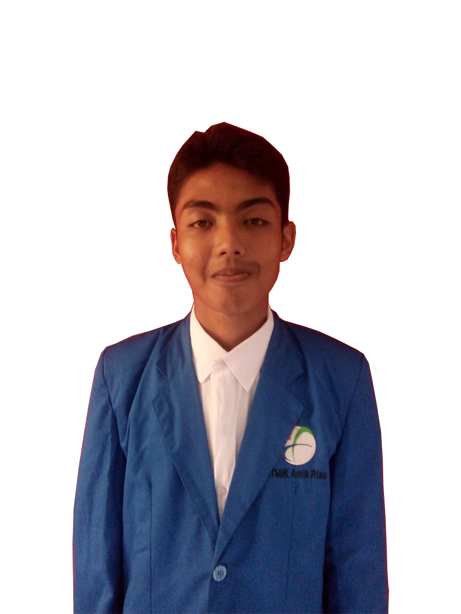

dikala orang lain di usia 13-15 sudah bisa bergaul,menyesuaikan diri. berbeda dengan saya yang masih terlalu polos dan aneh,kalau dipikir sekarang tidak heran saya SMP jadi sasaran empuk bullying,karena sikap saya SMP tidak normal dianggap orang lain. setelah menginjak SMK sikap aneh saya itu makin berkurang,dan saya bisa merasakan masa pertemanan sekolah yang INDAH
Si rozi adalah seorang anak gemar main warnet sejak menginjak di sekolah pertama menengah(SMP).bahkan pernah bolos sekolah demi main game kesayangan.selain main game kesayangan,saya juga korban bully sama teman sekolah dan Sekelas di SMP,nah awalnya saya tertarik dibidang IT ialah cheat game online terutama POINT BLANK. saya menggunakan cheat hanya penasaran. semakin waktu ke waktu saya jadi ketagihan menggunakan cheat tersebut, sangking penasaranya saya pingin tau gimana cheat game tersebut tercipta? dan bagaimana cara membuatnya?. setelah saya bertemu dan berinteraksi sama developer cheat tersebut.saya pengen belajar,sayangnya untuk belajar bikin cheat tersebut mengeluarkan biaya tidak sedikit.apalagi si rozi hanyalah hidup di kelas menengah,saya jadi sedih.tidak menyerah gitu aja,setelah saya tamat sekolahnSMP). saya pengen masukan SMK jurusan TKJ(Teknik komputer jaringan). dengan berharap di sekolah tersebut saya mendapatkan ilmu bikin cheat tersebut
pendirian memang saya kurang kuat,dari pernah cita-cita menjadi developer cheat,software developer pembisnis,sampai developer artificial intellegence (kecerdasan buatan) insyallah developer kecerdasan buatan ini sudah saya kuatkan ada hal cita-cita saya yang belum tergoyahkan,yaitu jadi kaya hehehe
hampir rata2 orang indonesia,masa remajanya pasti memiliki kisah percintaan mulai dari manis hingga pahit. tapi itu tidak berlaku bagi saya. saya tidak pernah merasahkan itu semua,selain isi kelas saya (SMK) Cowok semua,saya juga orangnya pemalu.seandainya saya perempuan mungkin nasibnya tidak seperti ini,karena hampir semuanya cowoklah dulu yang memulai menyampaikan perasaan ke lawan jenisnya
Alasan saya mengupload portfolio ini adalah, untuk memberi kepercayaan pada klien. mohon kerja samanya. terima kasih telah memberi kepercayaan kepada saya ;)